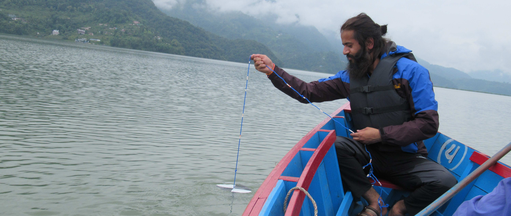
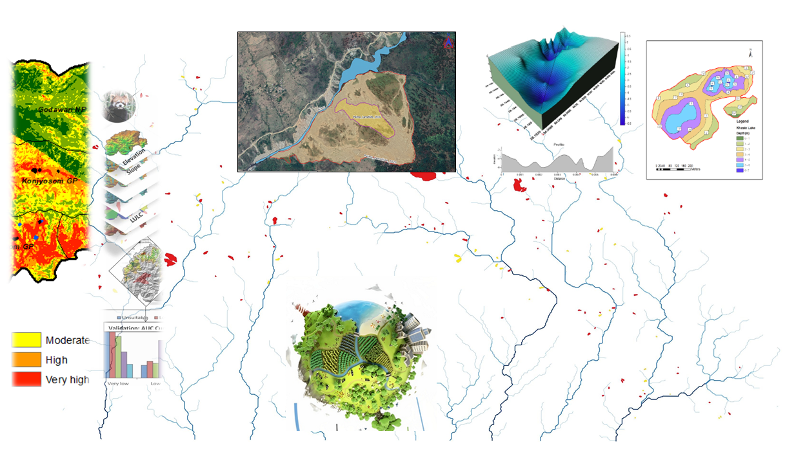
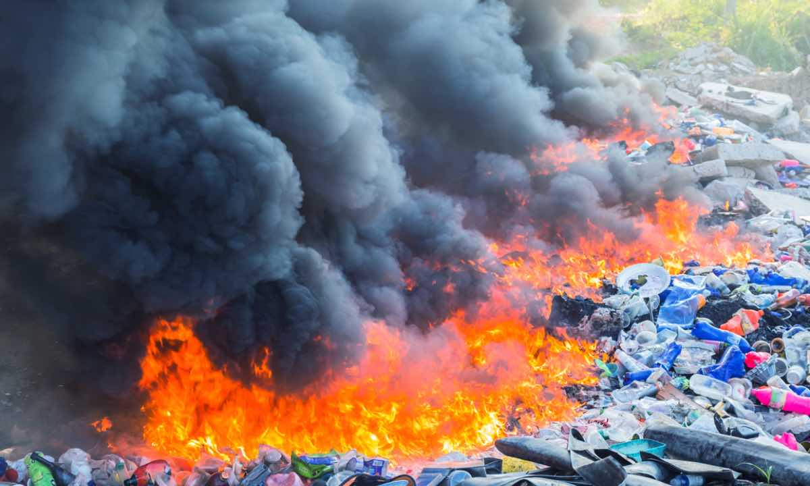

Research findings, field experiences, and perspectives on environmental science and disaster risk management
Exploring climate change impacts on mountain ecosystems and communities

Monitoring and analyzing freshwater resources in Nepal's river basins

Advanced mapping and analysis for environmental research and disaster management

Quantifying greenhouse gas emissions and mitigation strategies for open waste burning